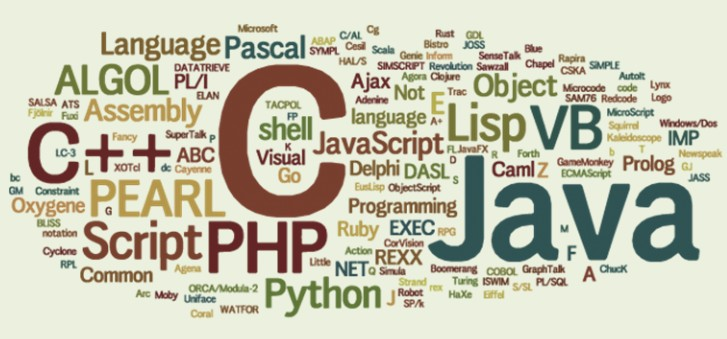

IT行业中的企业特点是都属于知识密集型企业。这种企业的核心竞争力与员工的知识和技能密切相关。而如果你在企业中扮演的是工程师的角色的话，那么你的核心竞争力就是IT相关的知识与技能的储备情况。而众所周知，IT行业是一个大量产生新知识的地方，就拿Web前端举例，短短的5，6年时间，Web前端已经经历了数次变革，就目前来看变革还将继续下去。从以前的div+css网格化布局到JavaScript的方兴未艾，然后是各种JavaScript框架的百家争鸣，HTML5和CSS3的落地，移动web冲击下带来的响应式设计，jQuery,AngularJs,ReactJs等操作DOM元素截然不同的理念和方式，web component的标准化进程……为什么现在企业到处都在招前端工程师？好像突然之间，前端工程师成了稀缺资源。这里的原因之一就是很多前端工程师跟不上行业变化，无法达到目前市场上对前端工程师的能力和要求。在这种大环境下，工程师能够掌握快速学习的能力就变的至关重要。

笔者根据自身的亲身体会，以及结合对周围同事的观察，对如何快速掌握一门新技术（这里的技术包括一门新的IT技术，包括一门新的编程语言，抑或一种新的程序框架等）有着以下几点指导。
要想快速掌握一门新技术，首先有两个先决条件。- 首先思想要主动求变，敢于跳出的自己的舒适区，对任何技术都抱有开放的心态。贪图安稳是人的本性。而这种本性往往会阻碍你的发展。人所能了解的知识的多少，取决于自己的舒适区有多大，舒适区越大，与外界接壤的范围越大，就越感觉自己的无知。程序员至少要做到两点，不要对自己不了解的技术心存偏见，不要对自己不熟悉的技术心存恐惧。
- 要化被动式学习为主动式学习。在中国很大一批程序员每天都是在被动式学习。什么是被动式学习？就是被人、事逼着去学习。今天新启动一个项目，技术调研不想采用新的技术，开发过程中碰到难题才会去查资料，整天就是把别人的、自已以前写的代码复制重用，复制以后出问题了也要花好长时间解决。举个例子，一个程序员使用了Spring好几年，都不知道Spring的核心理念，不知道Spring框架结构，不知道Spring各个组件功能，不知道Spring新版本的新特性。这是非常可怕的，因为你不知道这些东西，就无法采纳Spring的最佳实践，出现问题不知道如何快速定位，项目中的某些需求就无法使用Spring早已封装好的功能（因为你不知道Spring还能干这个）。主动式学习需要你未雨绸缪，不能临时抱佛脚。而且要把学习看做是对自己的积累和提高，看成是对自己的长期投资，不能抱有太强的功利性。
有人说，我就是喜欢舒适区，我就是不喜欢主动学习，有什么好的方式和方法改变这两点？说实话，我所能提供给你的帮助很有限。正如《后会无期》里的一句台词，"我听过很多大道理，可依然过不好这一生"。这两点还是更要靠你个人来实现。而接下来的一些点，我相信可以帮助到你。
- 学习一门新技术前，先要搞清楚为什么要学习它？没这个技术前我们是怎么干活的？有了它以后我们又是怎么干活的？它带来了哪些改变？其实问这些问题，就是为了了解该技术解决或者简化了那个问题域的问题，又是采用了什么方式达到了这样的效果。就拿AngularJS为例，AngularJS最初是为了弥补HTML构建应用的不足。以前的HTML在设计时是为了展示多媒体信息，后来虽然拓展了一些动态功能，但是在应用web化的潮流下，HTML设计上的不足就越来越突出。比如DOM元素操控太繁琐、业务逻辑很难模块化、可测性低、开发效率底下等。而AngularJS采用了一种全新的设计来解决该问题，它提出了一系列概念，引入了数据绑定、标识符、路由、依赖注入等特性，大大简化了我们开发WEB开发的工作量。通过这样的方式能迅速建立起了对该技术的宏观认识，了解了其潜在的应用场景、应用方式以及一些局限性等。
- 接下来就要实际使用一下该技术的核心的功能，强化对它的认识。方式就是参考该技术官网的Quick Start（快速开始）章节，一步一步来。现在的程序员越来越珍惜时间，文档的简洁性、完备性、易上手都成了是否采纳某项技术的指标之一。尤其是现在的各种开源组件，连文档都是开源的。所以很多文档都是完全按照程序员的思维写的，读起来很清爽。再拿Spring来说，想学习Spring4.0推出的Spring boot组件，那么可以访问其官网，页面上最大的按钮就是Quick Start。点击学习吧。页面是一个简单的例子，可能花不了你五分钟。如果还没过瘾，右边又列出了更多的
Getting Started Guides ，也是一步一步的教你进阶功能。有些人可能要问了，英语不好怎么办？请学英文。英文是一个优秀程序员的必备技能。可能也有人说，看文档时有各种杂音咋办。比如看Spring boot的start guide，需要之前对Spring有一定了解，需要知道tomcat、jetty是干啥的，需要有一定gradle或者maven使用经验…这些知识在演练Spring boot的那个小程序时都需要，但由于这些杂音的干扰，会拖慢学习的过程。摆脱这些杂音的唯一方式就是，对于那些不了解的知识点，也花时间去学习吧。所以学习是一个良性循环的过程，学的越多，就学的越快。
- 前面两步能够保证你对一门技术入门，那么如何进阶那？这个阶段就是读了。从官网上把该技术的详细文档扒拉下来，使劲读吧。通读这些文档能让你进入它的实现细节，以及各种使用方式与场景，甚至一些最佳实践。比如Spring boot官方文档，详细到了牙齿。凡是你想到的、没想到的，文档都贴心的列了出来。如果你想学习Scala，那么请访问http://www.scala-lang.org/documentation/，各种文档应有尽有，读完就是大半个Scala专家。一门技术最好的文档必须是它的官方文档，如果不是，那么这门技术火不了。注意通读文档的过程中一定要在项目加以运用。如果在项目中没实践机会，自己可以写一些小的demo来实践。学习知识时实践与理论相结合的道理恒古不变。
- 走完前三步，你对这门技术的理解已经比大多数人强了。你可以算掌握这门技术了。那么还有进阶方式没？当然有，那就是把你所学、所想讲出来，写出来，暴露在公众之下，接受批判，从而发现自己的不足，促使你进步。有空给大家做几个讲座，写几个系列文章，那么你在大家眼中就成了这门技术的牛人。你就有了各种机会来解决使用该技术遇到的各种疑难杂症，反过来加深和修正你的理解。没事上上StackOverFlow，回答别人几个问题，或者订阅该技术的问题列表，经常看一看。
- 还可以再继续深入。加入国内/国际技术社区（国内没这样的社区咋办，机会来了，赶紧自己建一个），进一步发挥自己影响力。翻译、编写与该技术相关的书籍；如果该技术是开源的，那么有时间就提交修改把，自己就成了开发者一员了。这就是质的飞跃，从使用工具进阶到创造工具。
走完5步，你已经不是仅仅掌握这门技术了，你已经超神了好吧！有人可能又会问，能达到这五步的肯定要花很长时间，不是一般人能够到的高度。那当然了，这个过程肯定很难，但并非难到登天。至少我身边有很多这样的例子。其实你只要完成前三步，你就比50%的程序员牛了，完成第四步，你已经站在90%程序员的前面。
最后快速总结。重要的事情说三遍。
- 主动学习很重要，主动学习很重要，主动学习很重要。
- 官方文档很重要，官方文档很重要，官方文档很重要。
- 实践很重要，实践很重要，实践很重要。

点我分享笔记